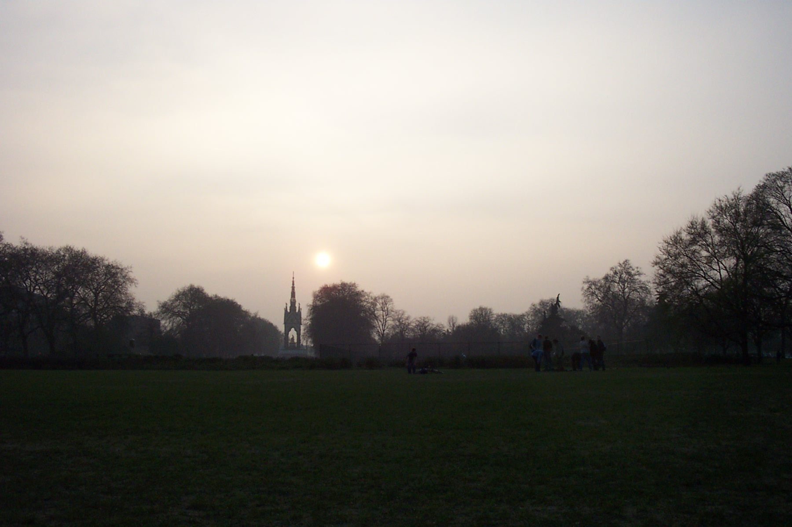
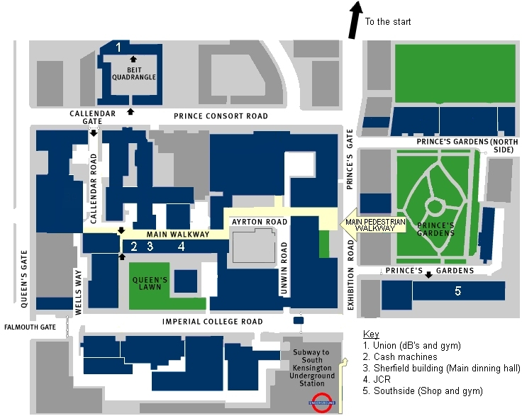
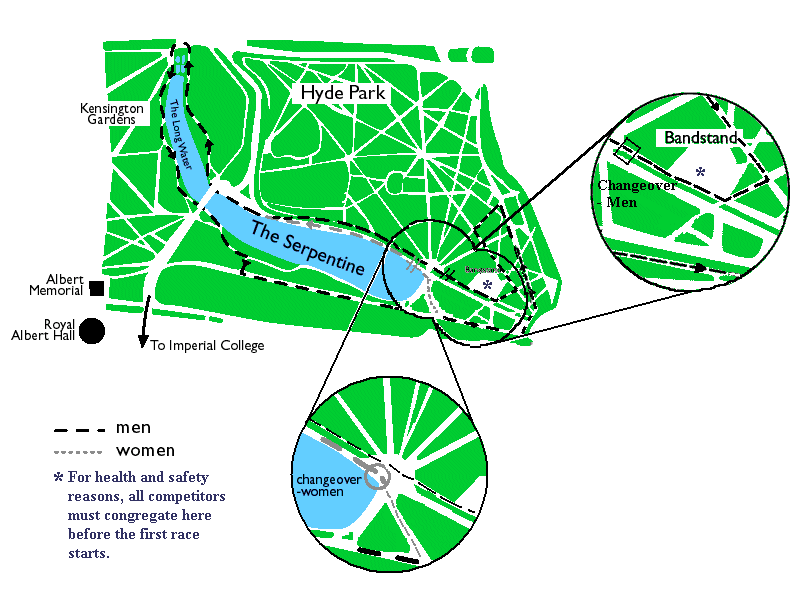
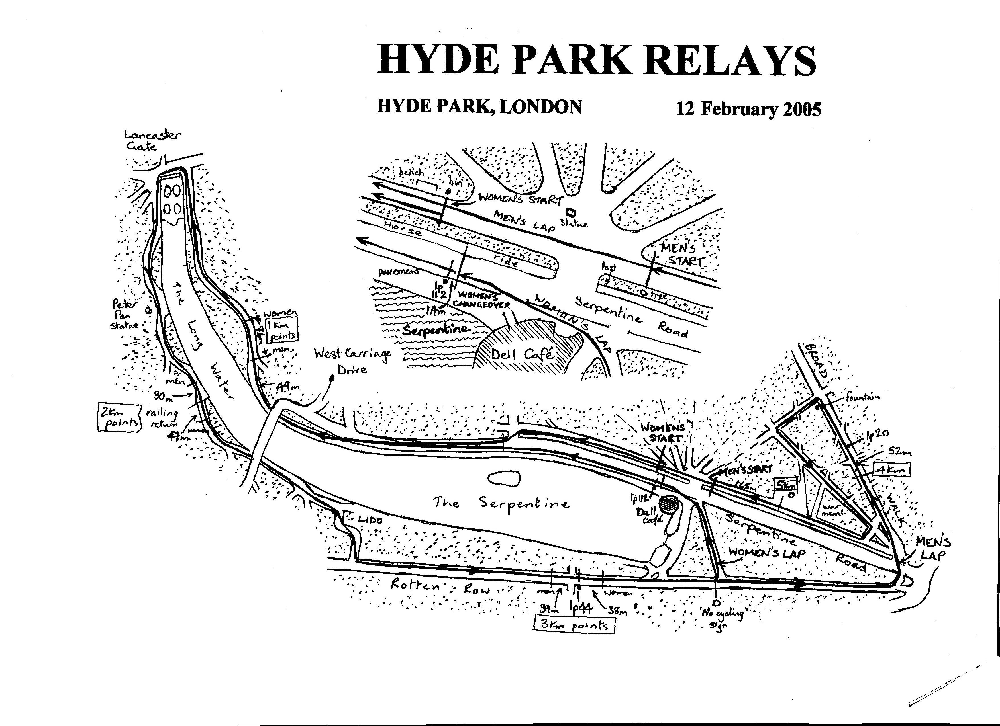

The Hyde Park Relays is a student relay race through Hyde Park and Kensington Gardens,
winding around the Serpentine lake and down to Hyde Park Corner (for the men).
Please see the maps section below for the exact route.
Exclusive race T-shirts will also be available on the race day!
|

|
Race structure:
Mens teams run a total of 6 laps,
with each runner completing a lap of not less than 5.164 km. (approx 3.2 miles)
Womens teams run a total of 4 laps,
with each runner completing a lap of not less than 3.464 km. (approx 2.2 miles)
Note: These distances have been officially measured.
Map of the college

|
Map of the course

|
Alternative map

|
Click on the pictures to see them in full size!
Men/Mixed
1st, 2nd, 3rd team (all current students)
1st, 2nd and 3rd fastest individual legs of the day (current students)
1st Foreign team (not already in the overall top three)
1st Guest Team
Women
1st, 2nd, 3rd team (all current students)
1st, 2nd and 3rd fastest individual legs of the day (current students)
1st Foreign team (not already in the overall top three)
1st Guest Team
Extra
We will also be presenting the Gary Hoare trophies (to the slowest teams)
as winning isn't all that matters!
There will also be seperate prizes available for internal Imperial teams.
Note that prizes will be increased if there is a high enough response before Christmas!
| Timetable for the BIG DAY |
10:30 - 13:00
Team registration in Metric in the Union. Find the form in Metric and fill it in with the names of your runners (1 form per team).
You'll then receive your numbers, and have the chance to buy a race T-shirt.
14:00
Start of mens/mixed race.
14:05
Start of women's race.
17:00
Food and drink (much improved food this year, with chilli and jacket potatoes on offer) served in the SCR on the main walkway.
17:30
Presentations in the JCR, after which you can clean up and make yourself look pretty!
18:00
Union bar opens.
19:00 - 02:00
Storming party in Metric in the Union. We have managed to get an extended licence
which means that the bar will close at 1am and Metric will finally shut at 2am!
| Accomodation arrangements |
Free accommodation can be provided in the form of floor space in Union Gym for Thursday to Sunday.
Please indicate on the entry form which (if any) nights you want to stay. People who requested accommodation will have space
to sleep from 22:00 to 09:00 the following morning, when the rooms must be vacated.
Note that in the event of too many people
wanting to stay on Saturday night we may ask for a very small charge to cover extra hired accommodation or in extreme circumstances
may limit free accommodation to foreign teams. To guarantee accommodation please return completed entry forms as soon as possible.
Food and drink will be provided(much improved food this year, with curry and jacket potatoes on offer) before the prize giving in the SCR on the main walkway.
Please see the timetable below for further details.
| Showers and changing rooms |
Showers and Changing rooms will be provided on the day in Ethos, the Imperial College Sports Centre in Prince's Gardens.
You can be assured they will be clearly sign-posted on the day.
|
|

Imperial College London ICUCCAC 2010-2011
Webmaster thomas.ward06@imperial.ac.uk
|